Publications
Hild BF, Brüschweiler D, Hild STK, Bugajska J, von Wyl V, Rosso M, Wever KE, Furrer E, Ineichen BV (2024) “Quality, topics, and demographic trends of animal systematic reviews - an umbrella review.” Journal of Translational Medicine In print
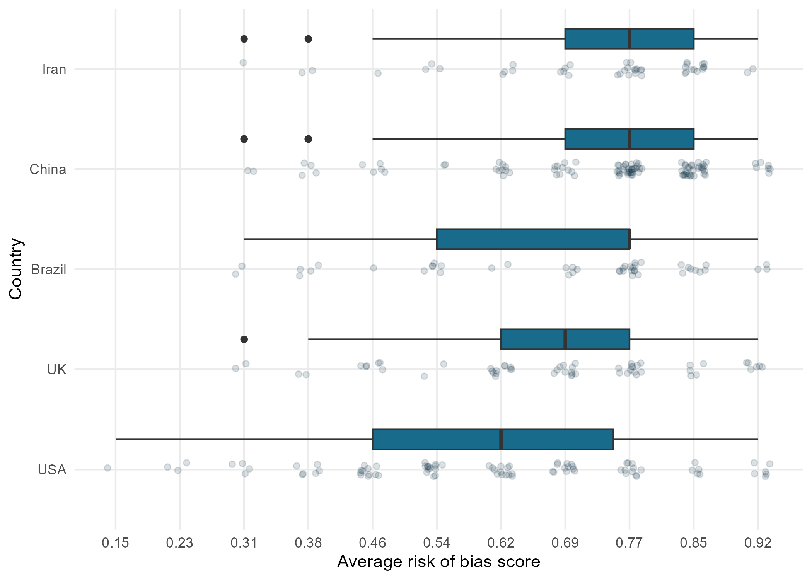
Berg I, Härvelid P, Zürrer WE, Rosso M, Reich DS, Ineichen BV (2024) “Which experimental factors govern successful animal-to-human translation in multiple sclerosis drug development? A systematic review and meta-analysis.” eBioMedicine DOI
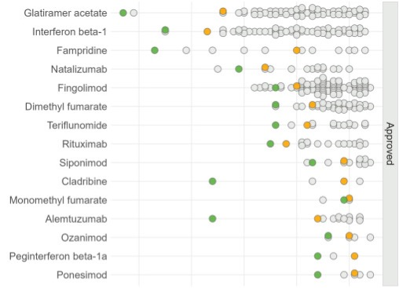
Rosso M, Doneva S, Howells D, Leenaars CHC, Ineichen BV (2024) “Summer school for systematic reviews of animal studies: Fostering evidence-based and rigorous animal research.” ALTEX - Alternatives to animal experimentation DOI
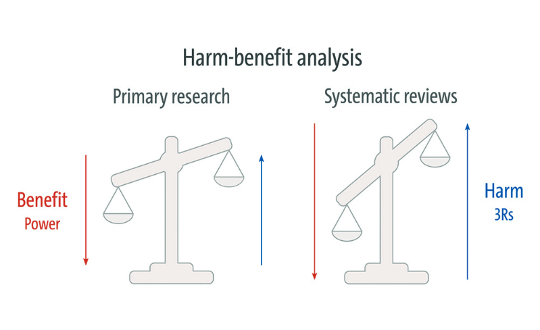
Rosso M, Herrera A, Würbel H, Voelkl B (2024) “Evidence of HARKing in mouse behavioural tests of anxiety.” Royal Society Open Science DOI
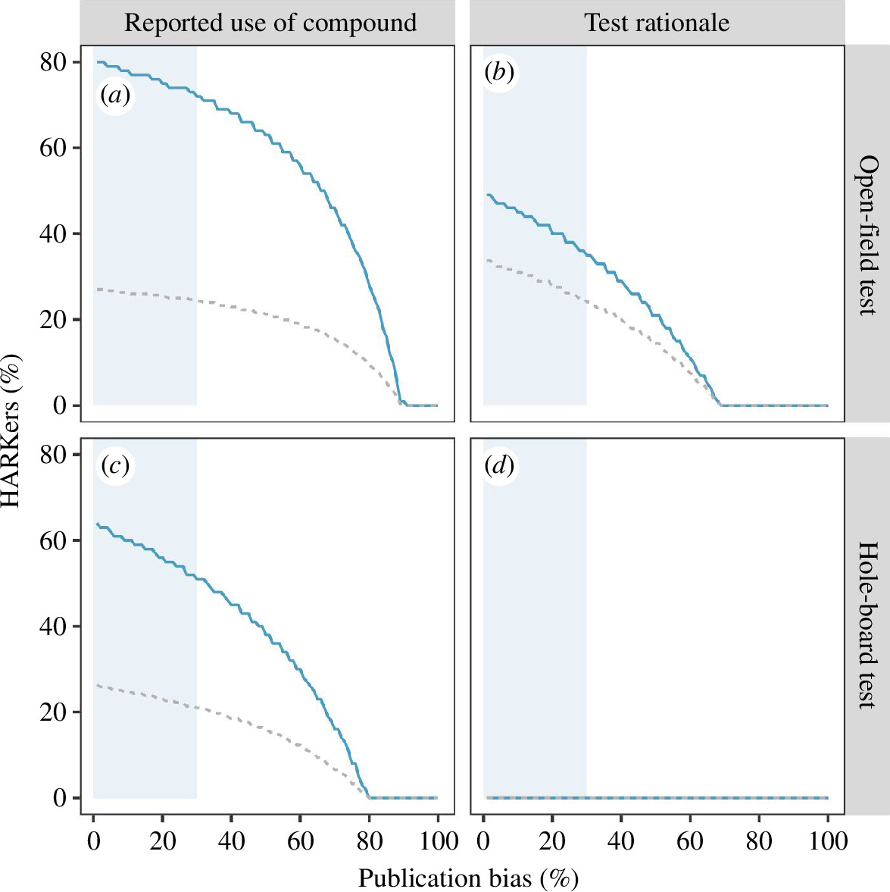
Ineichen BV, Rosso M, Macleod MR (2023) “From data deluge to publomics: How AI can transform animal research” Lab Animal DOI
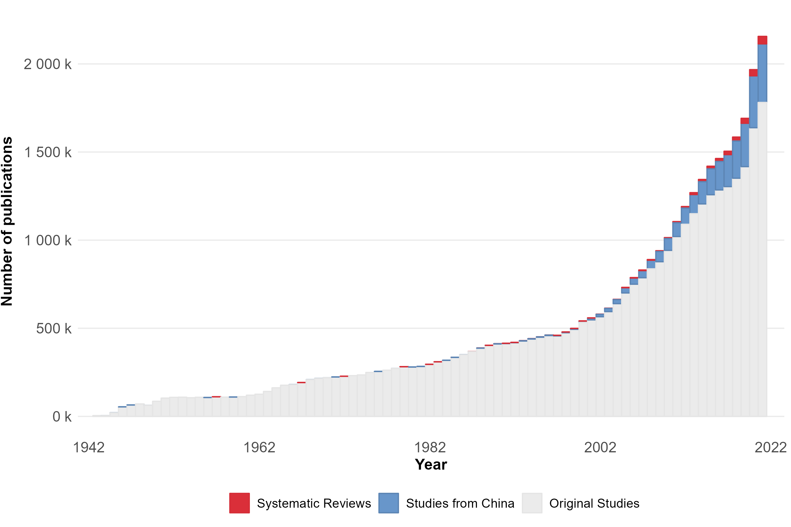
Rosso M, Held L (2023) “Primer: Principles of Data Visualization.” Center for Reproducible Science Primer Collection, Zenodo DOI
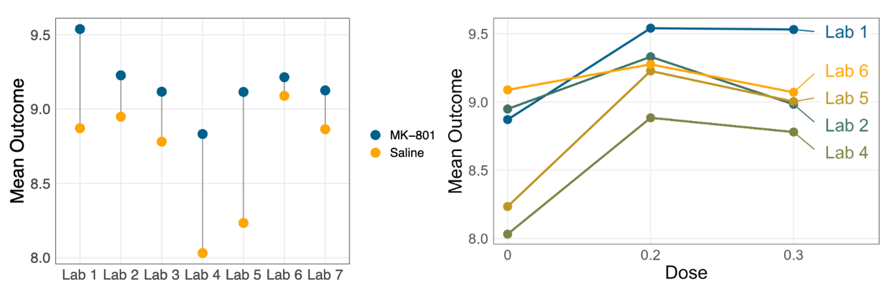
Zurrer WE, Cannon AE, Ewing E, Rosso M, Reich DS, Ineichen BV (2023) “Auto-STEED: A data mining tool for automated extraction of experimental parameters and risk of bias items from in vivo publications.” bioRxiv DOI
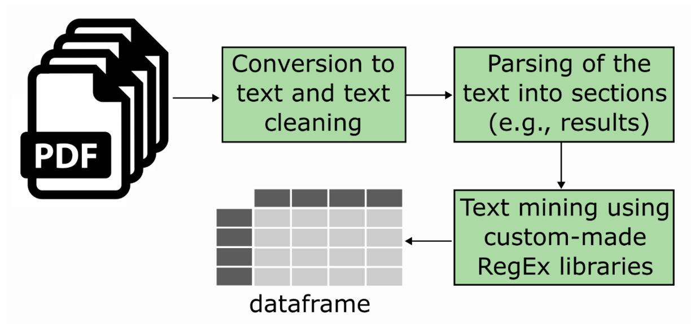
Rosso M, Wirz R, Loretan AV, Sutter NA, Pereira da Cunha CT, Jaric I, Würbel H, Voelkl B (2022) “Reliability of common mouse behavioural tests of anxiety: A systematic review and meta-analysis on the effects of anxiolytics.” Neuroscience & Biobehavioral Reviews DOI
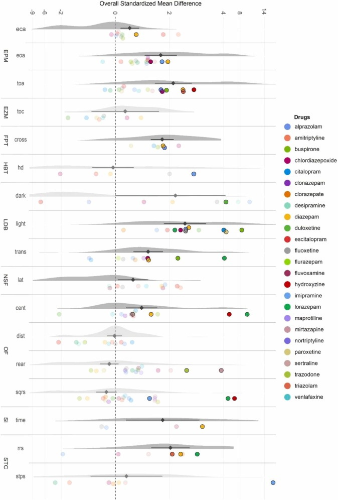
Novak J, Jaric I, Rosso M, Rufener R, Touma C, Würbel H (2022) “Handling method affects measures of anxiety, but not chronic stress in mice.” Scientific Reports DOI
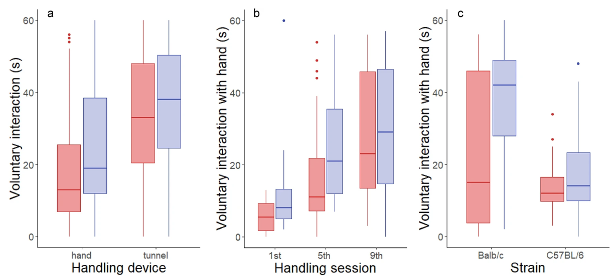
Jaric I, Voelkl B, Clerc M, Schmid MW, Novak J, Rosso M, Rufener R, von Kortzfleisch VT, Richter SH, Buettner M, Bleich A, Amrein I, Wolfer DP, Touma C, Sunagawa S, Würbel H (2022) “The rearing environment persistently modulates mouse phenotypes from the molecular to the behavioural level.” PLOS Biology DOI
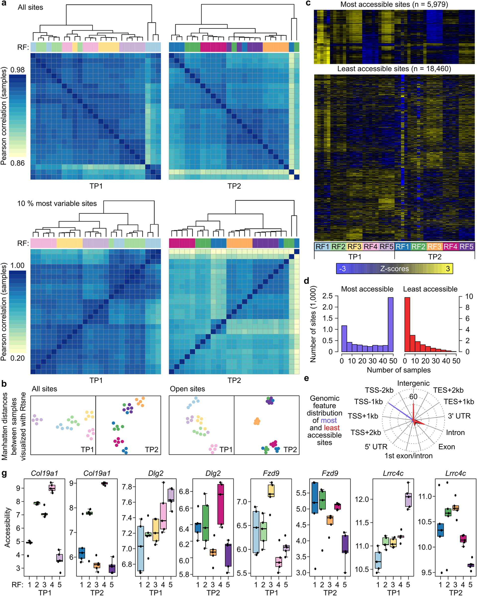
von Kortzfleisch VT, Ambrée O, Karp NA, Meyer N, Novak J, Palme R, Rosso M, Touma C, Würbel H, Kaiser S, Sachser N, Richter SH (2022) “Do multiple experimenters improve the reproducibility of animal studies?.” PLOS Biology DOI
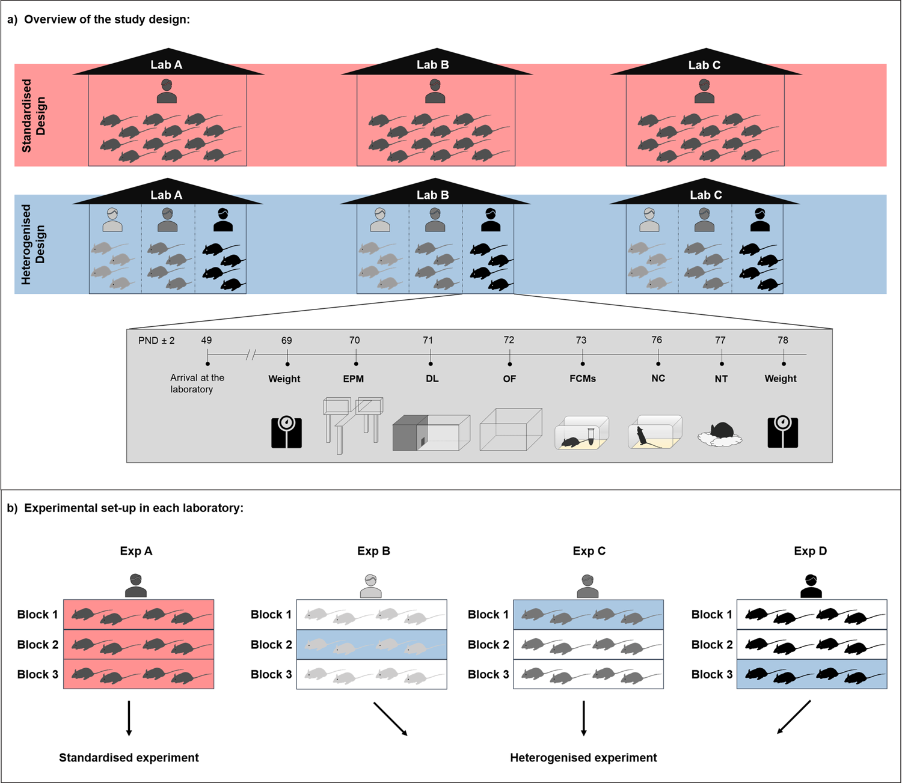
Bailoo JD, Voelkl B, Varholick J, Novak J, Murphy E, Rosso M, Palme R, Würbel H (2020) “Effects of weaning age and housing conditions on phenotypic differences in mice.” Scientific Reports DOI
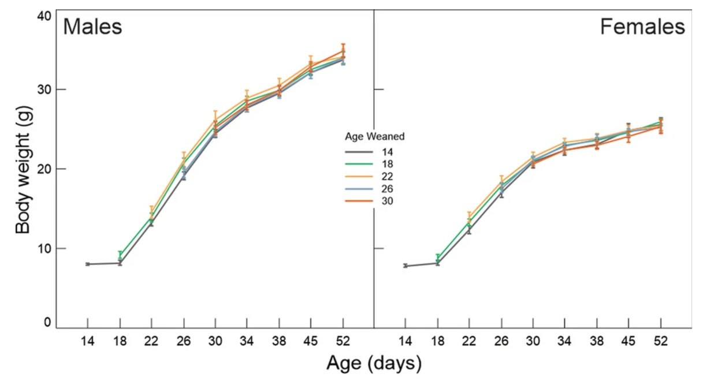